청소년상담사-1급(1교시) (2016-10-01 기출문제)
1과목: 상담사 교육 및 사례지도
1. 수퍼비전에 관한 설명으로 옳지 않은 것은?
- 수퍼바이저와 상담자, 내담자간의 전문적 관계이다.
- 상담자의 전문성발달을 목적으로 한다.
- 상담자가 유능해짐에 따라 수퍼바이저로부터 상담기법에 대한 지도를 받을 필요가 점차 줄어든다.
- 상담자의 소진 관리는 수퍼비전에서 다룰 주제가 아니다.
- 수퍼바이저의 이론적 성향은 수퍼비전 목표설정에 영향을 준다.
(정답률: 알수없음)

2. 다음 설명에 가장 적합한 수퍼바이저의 역할은?
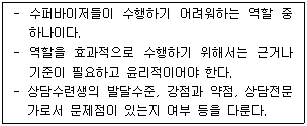
- 상담자
- 자문가
- 교사
- 중재자
- 평가자
(정답률: 알수없음)
3. 수퍼비전 시 상담수련생의 저항에 관한 설명으로 옳은 것은?
- 인지된 위협에 대한 상담수련생의 자연스러운 반응이다.
- 평행과정에서는 상담수련생의 저항행동이 나타나지 않는다.
- 수퍼비전 자료를 여러 차례 가져오지 않는 것은 저항에 포함되지 않는다.
- 수퍼바이저의 can개입은 must개입보다 저항을 쉽게 불러일으킨다.
- 상담수련생의 저항이 적을수록 수퍼비전 과정은 비효율적이다.
(정답률: 알수없음)
4. 평행과정(parallel process)에 관한 설명으로 옳지 않은 것은?
- 평행과정의 개념은 정신역동적 수퍼비전에 뿌리를 두고 있다.
- 상담자가 수퍼비전 회기에서 내담자의 특성을 나타내는 하향식 현상이다.
- 상담자-내담자 관계에 의해서 촉발될 수 있다.
- 평행과정은 수퍼비전에 대한 수퍼비전에서도 나타날 수 있다.
- 평행과정의 통로는 상담자이다.
(정답률: 알수없음)
5. 수퍼비전에서 활용하는 대인관계 과정 회상(IPR)기술에 관한 설명으로 옳은 것을 모두 고른 것은?
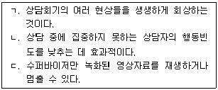
- ㄱ
- ㄴ
- ㄱ, ㄴ
- ㄴ, ㄷ
- ㄱ, ㄴ, ㄷ
(정답률: 알수없음)
6. 다음 ( )에 공통으로 들어갈 내용으로 옳은 것은?
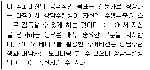
- 자문가 역할
- 라이브 수퍼비전
- 이형동질과정
- 자기 수퍼비전
- 자기개방
(정답률: 알수없음)
7. 스완슨(C. Swanson)의 윤리적 상담을 위한 원칙을 상담수련생에게 지도할 때, 그 내용에 해당하지 않는 것은?
- 내담자 이익의 극대화
- 자율성 존중
- 개인과 전문가로서의 정직성
- 악의, 사심 없는 행동 추구
- 전문가로서 최선의 판단에 따른 행동추구
(정답률: 알수없음)
8. 집단 수퍼비전에 관한 설명으로 옳은 것을 모두 고른 것은?
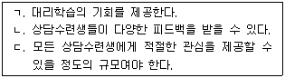
- ㄱ
- ㄴ
- ㄱ, ㄴ
- ㄴ, ㄷ
- ㄱ, ㄴ, ㄷ
(정답률: 알수없음)
9. 상담자 발달수준을 고려할 때, 고급상담수련생 수퍼비전에 관한 설명으로 옳지 않은 것은?
- 문화적 배경이 다른 내담자와 상담하도록 독려하는 것은 고급상담수련생이 균형있게 성장하도록 돕는다.
- 지속적으로 수퍼비전을 받는 것은 고급상담수련생이 상담에 대한 지식과 기술을 통합하는 기회가 된다.
- 고급 수준에 도달하지 못한 영역이라 할지라도 상담진행에 대한 상담자의 자율성을 보장해야 한다.
- 직면적 개입을 적절히 활용할 필요가 있다.
- 고급상담수련생은 수퍼바이저가 숙련된 상담자일 때 효과적인 도움을 받을 수 있다.
(정답률: 알수없음)
10. 인간중심 수퍼비전에 관한 설명으로 옳지 않은 것은?
- 상담수련생 스스로 자기 자신을 탐색하고 이해하도록 조력한다.
- 상담수련생이 성장할 동기를 가지고 있다는 점에 대해 신뢰한다.
- 상담수련생의 자기실현경향성을 존중한다.
- 수퍼바이저는 상담수련생에게 경청하고 질문은 최소화한다.
- 수퍼비전 과정에서 상담수련생의 문제 진단과 진단명 붙이기와 같은 작업이 이루어진다.
(정답률: 알수없음)
11. 정신분석 수퍼비전에 관한 설명으로 옳은 것을 모두 고른 것은?
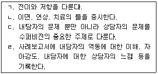
- ㄱ, ㄴ
- ㄷ, ㄹ
- ㄱ, ㄴ, ㄷ
- ㄴ, ㄷ, ㄹ
- ㄱ, ㄴ, ㄷ, ㄹ
(정답률: 알수없음)
12. 다음 수퍼비전 과정에서 수퍼바이저가 상담수련생에게 지도하고자 한 상담기법은?
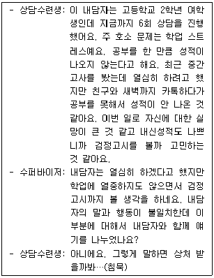
- 직면
- 공감
- 재진술
- 해석
- 감정반영
(정답률: 알수없음)
13. 상담 수퍼비전의 역사에 관한 설명으로 옳은 것은?
- 1900년대 중반의 수퍼비전 이론들은 전반적으로 심리치료 이론을 반영한 것이다.
- 수퍼비전의 시작은 1800년대 초반에 간호학 영역에서 시작되었다.
- 1870년에 프로이트(S. Freud)는 정신분석에서의 수퍼비전 단계를 설정하였다.
- 1960년대에 수퍼비전에 기반한 수퍼비전 모델들이 본격적으로 등장하였다.
- 1960년대에 수퍼비전의 과정과 결과에 대한 연구가 활성화되기 시작하였다.
(정답률: 알수없음)
14. 헤스(A. Hess)가 제시한 수퍼바이저의 발달단계에 해당하는 것을 모두 고른 것은?
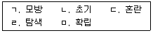
- ㄱ, ㄴ, ㄷ
- ㄱ, ㄷ, ㄹ
- ㄴ, ㄷ, ㅁ
- ㄴ, ㄹ, ㅁ
- ㄷ, ㄹ, ㅁ
(정답률: 알수없음)
15. 수퍼바이저의 역할과 설명이 옳은 것을 모두 고른 것은?
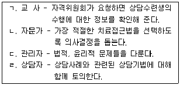
- ㄱ, ㄹ
- ㄴ, ㄷ
- ㄱ, ㄴ, ㄷ
- ㄴ, ㄷ, ㄹ
- ㄱ, ㄴ, ㄷ, ㄹ
(정답률: 알수없음)
16. 상담자 발달 수준을 고려할 때, 초급상담수련생에 관한 설명으로 옳은 것을 모두 고른 것은?
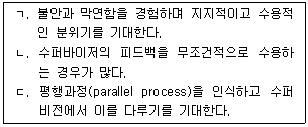
- ㄱ
- ㄴ
- ㄱ, ㄴ
- ㄴ, ㄷ
- ㄱ, ㄴ, ㄷ
(정답률: 알수없음)
17. 수퍼바이저와 상담수련생의 갈등 해결에 관한 설명으로 옳지 않은 것은?
- 자문가를 찾아서 조언을 구할 수 있다.
- 수퍼비전 관계에 대해 초기에 작성한 계약서를 활용할 수 있다.
- 갈등을 해결한다고 해도 수퍼비전 관계는 회복되지 않는다.
- 수퍼비전 관계는 대부분 생산적이지만 드러나지 않은 갈등이 있을 수 있다.
- 만족스러운 수퍼비전을 위해서 서로 어떤 노력이 필요할 지 개방적으로 탐색한다.
(정답률: 알수없음)
18. 로네스타드(M. Rønnestad)와 스코볼트(T. Skovholt)의 수퍼비전 발달 모델의 6단계에서 제5단계에 해당하는 것은?
- 초보 전문가 상태
- 중급 전문가 상태
- 대학원 후기 상태
- 숙련된 전문가 상태
- 원로 전문가 상태
(정답률: 알수없음)
19. 수퍼바이저의 역할수행 항목으로 적절하지 않은 것은?
- 내담자의 복지 보호 감독
- 진단 및 약물처방 제공
- 윤리적 기준을 준수하도록 격려
- 피드백과 평가 제공
- 전문적 경험과 기회 제공
(정답률: 알수없음)
20. 다음이 설명하고 있는 가장 적합한 수퍼비전 이론은?
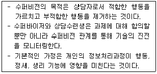
- 인지-행동적 수퍼비전
- 인간중심적 수퍼비전
- 체계적 수퍼비전
- 정신역동적 수퍼비전
- 내러티브 수퍼비전
(정답률: 알수없음)
21. 상담수련생이 상담 장면에서 경험하는 감정을 탐색하기 위한 수퍼바이저의 질문으로 가장 적절한 것은?
- 내담자의 그 말에 대해 어떻게 생각하세요?
- 무엇 때문에 내담자가 그렇게 화를 냈다고 생각하세요?
- 내담자가 6살 때 가족관계에서 어떤 일이 있었나요?
- 내담자가 말없이 울기 시작했을 때 어떤 느낌이 들었나요?
- 내담자와 상담실 이 외의 장소에서 만난 적이 있나요?
(정답률: 알수없음)
22. 상담수련생이 보고하는 상담의 위기상황에 대한 수퍼바이저의 위기 개입으로 옳지 않은 것은?
- 위기상황에 대해 상담수련생에게 질문하고 경청한다.
- 위기상황에 대해 취할 수 있는 모든 절차와 예상되는 결과를 검토하도록 상담수련생에게 지시한다.
- 위기상황에 대해 적절한 조치를 취하게 하고 그 결과를 평가한다.
- 관련된 법률적, 윤리적 기준보다는 상담수련생의 이익을 우선하여 적절한 조치를 선택한다.
- 위기상황과 관련된 임상기록을 검토하고 신속한 개입이 필요한 지 결정한다.
(정답률: 알수없음)
23. 다음은 수퍼바이저의 개입 반응이다. 수퍼바이저가 상담수련생에게 지도하고자 하는 상담 기법으로 가장 적절한 것은?
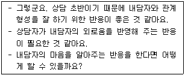
- 즉시성
- 존중
- 공감
- 탐색
- 해석
(정답률: 알수없음)
24. 다음 설명에 해당하는 수퍼비전 모델과 이를 주장한 학자를 바르게 연결한 것은?
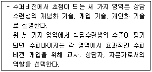
- 변별모델 - 버나드(J. Bernard)
- SAS모델 - 홀로웨이(E. Holloway)
- 통합모델 - 스코볼트(T. Skovholt)
- 발달모델 - 로네스타드(M. Rønnestad)
- 기술모델 - 로간빌(C. Loganbill)
(정답률: 알수없음)
25. 상담수련생과 내담자 간에 성적 문제가 발생했을 때, 수퍼바이저가 취할 수 있는 행동으로 적절하지 않은 것은?
- 성적 관계를 멈추도록 조치한다.
- 관련 자격 규정을 검토하고 자문을 구한다.
- 내담자를 다른 상담자에게 의뢰할 수 있다.
- 소속 기관의 방침을 고려해서 결정한다.
- 가벼운 성희롱의 경우는 묵인한다.
(정답률: 알수없음)
2과목: 청소년 관련 법과 행정
26. 청소년 기본법상 청소년시설에 관한 내용으로 옳은 것을 모두 고른 것은?
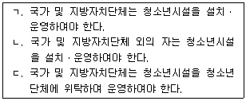
- ㄱ
- ㄴ
- ㄷ
- ㄱ, ㄴ
- ㄱ, ㄴ, ㄷ
(정답률: 알수없음)
27. 청소년 기본법에 관한 내용으로 옳지 않은 것은?
- 청소년상담사의 자격을 부여받은 청소년상담사는 청소년지도자에 해당한다.
- 청소년시설이란 청소년활동ㆍ청소년복지 및 청소년보호에 제공되는 시설을 말한다.
- 9세 이상 20세 미만인 사람을 청소년이라 정의하고 있다.
- 청소년복지란 청소년이 정상적인 삶을 누릴 수 있는 기본적인 여건을 조성하고 조화롭게 성장ㆍ발달할 수 있도록 제공되는 사회적ㆍ경제적 지원을 말한다.
- 청소년보호란 청소년의 건전한 성장에 유해한 물질ㆍ물건ㆍ장소ㆍ행위 등 각종 청소년 유해 환경을 규제하거나 청소년의 접촉 또는 접근을 제한하는 것을 말한다.
(정답률: 알수없음)
28. 청소년 기본법상 청소년육성에 관한 내용으로 옳은 것은?
- 읍ㆍ면ㆍ동에는 청소년육성 전담공무원을 둘 수 없다.
- 청소년육성 전담공무원은 청소년지도사 또는 청소년상담사의 자격을 갖지 않은 사람 중에서 임명하여야 한다.
- 청소년육성 전담공무원은 관할구역 외의 청소년에 대하여도 그 실태를 파악하고 필요한 지도를 하여야 한다.
- 청소년육성 전담공무원의 임용 등에 필요한 사항은 조례로 정한다.
- 청소년육성에 관한 업무를 효율적으로 운영하기 위하여 시ㆍ도에 청소년육성에 관한 업무를 전담하는 기구를 따로 설치하여야 한다.
(정답률: 알수없음)
29. 청소년 기본법령상 청소년육성기금에 관한 내용으로 옳은 것을 모두 고른 것은?
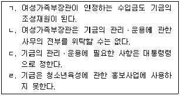
- ㄱ, ㄴ
- ㄱ, ㄷ
- ㄴ, ㄹ
- ㄷ, ㄹ
- ㄱ, ㄴ, ㄷ
(정답률: 알수없음)
30. 청소년복지 지원법의 내용으로 옳지 않은 것은?
- 국가 및 지방자치단체는 청소년의 체력검사와 건강진단을 실시할 수 있다.
- 국가는 청소년통합지원체계의 구축ㆍ운영을 지원하여야 한다.
- 국가 및 지방자치단체는 청소년의 건강진단 결과의 분석을 다른 전문기관에 의뢰할 수 없다.
- 국가 및 지방자치단체는 모든 청소년이 필요한 사항에 관하여 전문가의 상담을 받을 수 있도록 하여야 한다.
- 여성가족부장관 또는 지방자치단체의 장은 청소년 가출 예방 및 보호ㆍ지원에 관한 업무를 청소년 기본법에 따른 청소년단체에 위탁할 수 있다.
(정답률: 알수없음)
31. 청소년복지 지원법상 교육적 선도에 관한 내용으로 옳은 것은?
- 청소년 본인은 교육적 선도를 신청할 수 없다.
- 청소년의 보호자가 교육적 선도를 신청하는 때에는 청소년 본인의 동의를 받을 필요는 없다.
- 비행ㆍ일탈을 저지른 청소년에 대하여 해당 청소년이 취학하고 있는 학교의 장은 교육적 선도를 신청할 수 없다.
- 교육적 선도의 기간은 3개월 이내로 한다.
- 국가 및 지방자치단체는 선도 대상 청소년을 개인별로 전담하여 지도하는 선도후견인을 지정할 수 있다.
(정답률: 알수없음)
32. 청소년복지 지원법상 청소년의 우대 등에 관한 내용으로 옳지 않은 것은?
- 국가는 그가 운영하는 수송시설ㆍ문화시설ㆍ여가시설 등을 청소년이 이용하는 경우 그 이용료를 면제하거나 할인할 수 있다.
- 청소년이 이용하는 시설의 운영자가 민간단체인 경우, 국가는 그 단체에게 청소년의 시설이용료를 할인하여 주도록 권고하여야 한다.
- 국가가 운영하는 문화시설의 이용료를 면제받거나 할인받으려는 청소년은 그 시설의 관리자에게 주민등록증, 학생증, 청소년증 등 나이를 확인할 수 있는 증표 또는 자료를 제시하여야 한다.
- 특별자치도지사는 9세 이상 18세 이하의 청소년에게 청소년증을 발급할 수 있다.
- 청소년증의 발급에 필요한 사항은 여성가족부령으로 정한다.
(정답률: 알수없음)
33. 청소년복지 지원법상 한국청소년상담복지개발원에 관한 내용으로 옳지 않은 것은?
- 청소년 가족에 대한 상담ㆍ교육은 그 사무에 해당되지 않는다.
- 한국청소년상담복지개발원은 법인으로 한다.
- 정관을 변경하려는 경우에는 여성가족부장관의 인가를 받아야 한다.
- 원장 1명을 포함한 15명 이내의 이사와 감사 1명을 둔다.
- 원장의 임면권자는 여성가족부장관이다.
(정답률: 알수없음)
34. 청소년복지 지원법상 1년 이하의 징역 또는 1천만원 이하의 벌금에 처하는 경우를 모두 고른 것은?
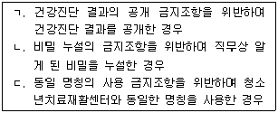
- ㄱ
- ㄱ, ㄴ
- ㄱ, ㄷ
- ㄴ, ㄷ
- ㄱ, ㄴ, ㄷ
(정답률: 알수없음)
35. 청소년복지 지원법상 다음 설명에 해당하는 청소년복지시설은?
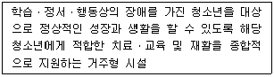
- 청소년쉼터
- 청소년자립지원관
- 청소년상담복지센터
- 청소년치료재활센터
- 이주배경청소년지원센터
(정답률: 알수없음)
36. 청소년복지 지원법상 ( )에 들어갈 용어로 옳은 것은?
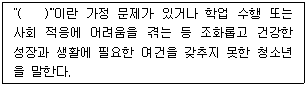
- 위험청소년
- 부적응청소년
- 일탈청소년
- 위기청소년
- 문제청소년
(정답률: 알수없음)
37. 다음 ( )에 들어갈 숫자가 순서대로 옳은 것은?
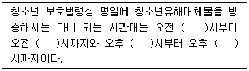
- 6, 9, 1, 9
- 6, 10, 2, 10
- 7, 9, 1, 10
- 7, 9, 1, 11
- 7, 10, 2, 10
(정답률: 알수없음)
38. 청소년 보호법의 내용이다. 다음 (ㄱ)과 (ㄴ)에 들어갈 숫자가 모두 옳은 것은?
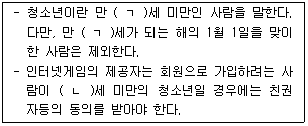
- ㄱ: 19, ㄴ: 14
- ㄱ: 19, ㄴ: 16
- ㄱ: 19, ㄴ: 19
- ㄱ: 20, ㄴ: 15
- ㄱ: 20, ㄴ: 16
(정답률: 알수없음)
39. 청소년활동 진흥법상 한국청소년활동진흥원의 감사를 임명하는 자는?
- 기획재정부장관
- 법무부장관
- 보건복지부장관
- 여성가족부장관
- 행정자치부장관
(정답률: 알수없음)
40. 아동ㆍ청소년의 성보호에 관한 법률의 내용으로 옳은 것은?
- 아동ㆍ청소년에 대한 강간죄는 디엔에이(DNA)증거 등 그 죄를 증명할 수 있는 과학적인 증거가 있는 때에는 공소시효가 무기한 연장된다.
- 아동ㆍ청소년의 성을 사는 행위를 한 자는 1년 이하의 징역 또는 1천만원 이하의 벌금에 처한다.
- 폭행이나 협박으로 아동ㆍ청소년으로 하여금 아동ㆍ청소년의 성을 사는 행위의 상대방이 되게 한 자는 3년 이상의 유기징역에 처한다.
- 폭행이나 협박으로 아동ㆍ청소년대상 성범죄의 피해자 또는 보호자를 상대로 합의를 강요한 자는 10년 이하의 유기징역에 처한다.
- 아동ㆍ청소년의 성을 사는 행위를 하도록 유인ㆍ권유 또는 강요한 자는 5년 이하의 징역 또는 3천만원 이하의 벌금에 처한다.
(정답률: 알수없음)
41. 아동ㆍ청소년의 성보호에 관한 법률상 ( )에 들어갈 숫자로 옳은 것은?
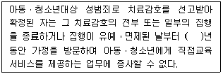
- 1
- 3
- 5
- 7
- 10
(정답률: 알수없음)
42. 학교폭력예방 및 대책에 관한 법률상 교육감의 임무로 옳지 않은 것은?
- 시ㆍ도 교육청에 학교폭력의 예방과 대책을 담당하는 전담부서를 설치ㆍ운영하여야 한다.
- 관할 구역 안에서 학교폭력이 발생한 때에는 해당 학교의 장 및 관련 학교의 장에게 그 경과 및 결과의 보고를 요구할 수 있다.
- 학교폭력 실태조사를 연 1회 실시하고 그 결과를 공표하여야 한다.
- 학교폭력 등에 관한 조사, 상담, 치유프로그램 운영 등을 위한 전문기관을 설치ㆍ운영할 수 있다.
- 관할 구역에서 학교폭력의 예방 및 대책 마련에 기여한 바가 큰 학교 또는 소속 교원에게 상훈을 수여하거나 소속 교원의 근무성적 평정에 가산점을 부여할 수 있다.
(정답률: 알수없음)
43. 학교폭력예방 및 대책에 관한 법령상 학교의 장이 실시하는 학교폭력 예방교육의 기준에 관한 내용으로 옳은 것은?
- 학기별로 4회 이상 실시하여야 한다.
- 학생에 대한 학교폭력 예방교육은 학년 단위로 실시함을 원칙으로 한다.
- 학생과 교직원, 학부모를 함께 교육하는 것을 원칙으로 한다.
- 강의, 토론 및 역할연기 등 다양한 방법으로 하고, 다양한 자료나 프로그램 등을 활용하여야 한다.
- 학부모에 대한 학교폭력 예방교육은 학교폭력 관련 법령에 대한 내용, 학생 대상 학교폭력예방 프로그램 운영 방법 등을 반드시 포함하여야 한다.
(정답률: 알수없음)
44. 소년법상 보호처분의 기간에 관한 내용으로 옳지 않은 것은?
- 보호관찰관의 단기 보호관찰기간은 1년으로 한다.
- 보호관찰관의 장기 보호관찰기간은 2년으로 하며, 소년부 판사는 보호관찰관의 신청에 따라 결정으로써 1년의 범위에서 한 번에 한하여 그 기간을 연장할 수 있다.
- 수강명령은 100시간을, 사회봉사명령은 200시간을 초과할 수 없다.
- 단기로 소년원에 송치된 소년의 보호기간은 3개월을 초과하지 못한다.
- 장기로 소년원에 송치된 소년의 보호기간은 2년을 초과하지 못한다.
(정답률: 알수없음)
45. 다음 설명에 해당하는 행정의 유형은?
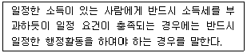
- 수익행정
- 침해행정
- 기속행정
- 재량행정
- 복효행정
(정답률: 알수없음)
46. 다음 설명에 해당하는 것은?
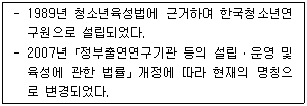
- 한국청소년정책연구원
- 한국청년정책연구원
- 한국청소년문화연구소
- 한국청소년활동진흥원
- 청소년보호위원회
(정답률: 알수없음)
47. 소년법상 사건 본인이나 보호자가 정당한 이유 없이 소환에 응하지 아니 하는 경우, 소년부 판사가 발부할 수 있는 동행영장에 기재하여야 하는 사항을 모두 고른 것은?
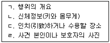
- ㄱ, ㄴ
- ㄱ, ㄷ
- ㄱ, ㄴ, ㄹ
- ㄴ, ㄷ, ㄹ
- ㄱ, ㄴ, ㄷ, ㄹ
(정답률: 알수없음)
48. 청소년 행정의 특성에 관한 설명으로 옳은 것을 모두 고른 것은?
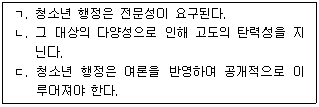
- ㄴ
- ㄱ, ㄴ
- ㄱ, ㄷ
- ㄴ, ㄷ
- ㄱ, ㄴ, ㄷ
(정답률: 알수없음)
49. 청소년활동 진흥법령상 단체가 그 회원을 대상으로 수련활동을 실시하는 경우, 청소년 참가인원이 150명 이상인 청소년수련활동이더라도 미리 청소년수련활동 인증위원회의 인증을 받지 않아도 되는 단체를 모두 고른 것은?
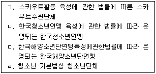
- ㄱ, ㄷ
- ㄴ, ㄹ
- ㄱ, ㄴ, ㄷ
- ㄱ, ㄴ, ㄹ
- ㄱ, ㄴ, ㄷ, ㄹ
(정답률: 알수없음)
50. '꿈을 키우는 청소년, 희망을 더하는 가족, 밝은 미래사회'를 비전으로 하여 4대분야 12대 중점과제를 제시한 것은?
- 제1차 청소년육성 5개년계획
- 제2차 청소년육성 5개년계획
- 제3차 청소년육성 5개년계획
- 제4차 청소년정책(수정ㆍ보완)기본계획
- 제5차 청소년정책기본계획
(정답률: 알수없음)
3과목: 상담연구방법론의 실제
51. 군집분석(cluster analysis)에 관한 설명으로 옳지 않은 것은?
- 단변량(univariate)분석 기법이다.
- 동일 범주(군집) 내에 있는 사람들은 서로 동질적이다.
- 기존에 분류된 하위유형들을 재확인할 때도 사용된다.
- 특정 현상에 대한 상담자의 진술을 분류하는데 사용할 수 있다.
- 진로를 결정하지 못하는 사람들의 하위유형을 확인하는데 사용할 수 있다.
(정답률: 알수없음)
52. “p-value에 기초한 통계적 유의성 검정에는 한계가 있다. 따라서 집단 간 차이나 변인의 효과가 실제로, 임상적으로 유의한지를 확인해야 한다.”에서 밑줄 친 부분과 관련이 가장 적은 것은?
- R2
- t
- η2
- ω2
- Cohen의 d
(정답률: 알수없음)
53. 학술 논문에서 '측정도구' 부분에 포함되는 내용을 모두 고른 것은?
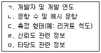
- ㄱ, ㄴ, ㄷ
- ㄴ, ㄷ, ㄹ
- ㄴ, ㄹ, ㅁ
- ㄱ, ㄷ, ㄹ, ㅁ
- ㄱ, ㄴ, ㄷ, ㄹ, ㅁ
(정답률: 알수없음)
54. 연구 시작 전에 70명의 내담자들로부터 애착과 특성불안을 측정하였고, 연구가 시작된 다음 16주 동안 매 상담 회기 후 즉시 내담자가 지각한 상담자와의 작업동맹을 측정하였다. 아래 제시된 연구문제들에 대하여 모두 답할 수 있는 자료 분석 기법은?
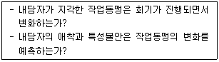
- 정준분석
- 판별분석
- 다층분석
- 요인분석
- 변량분석
(정답률: 알수없음)
55. 나머지 넷과 용도가 다른 통계 지수는?
- AIC(Akaike information criterion)
- (standardized path coefficient)
- SRMR(standardized root mean square residual)
- CFI(comparative fit index)
- RMSEA(root mean square error of approximation)
(정답률: 알수없음)
56. 조절효과를 검정하기 위한 가설을 모두 고른 것은?
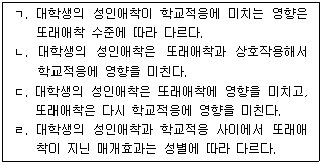
- ㄱ
- ㄴ
- ㄱ, ㄴ, ㄷ
- ㄱ, ㄴ, ㄹ
- ㄴ, ㄷ, ㄹ
(정답률: 알수없음)
57. 통계적 검정력(power)을 낮추는 요인을 모두 고른 것은?
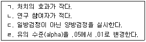
- ㄱ, ㄴ
- ㄴ, ㄷ
- ㄷ, ㄹ
- ㄴ, ㄷ, ㄹ
- ㄱ, ㄴ, ㄷ, ㄹ
(정답률: 알수없음)
58. 다음 열거된 내용은 검사도구의 어떤 타당도를 확인하기 위한 방법인가?
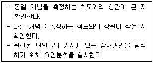
- 내용타당도
- 안면타당도
- 구인타당도
- 증분타당도
- 예언타당도
(정답률: 알수없음)
59. 연구의 타당도와 관련된 설명으로 옳은 것을 모두 고른 것은?
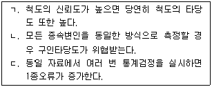
- ㄱ
- ㄴ
- ㄱ, ㄴ
- ㄱ, ㄷ
- ㄴ, ㄷ
(정답률: 알수없음)
60. 다음 중 패널연구(panel study)에 관한 설명인 것은?
- 매번 다른 표본을 추출하여 동일 모집단의 변화 경향성을 분석한다.
- 설문지와 협의회 방식을 통합해서 수차례에 걸쳐 전문가의 집단적 합의를 이끌어 낸다.
- 매년 200명의 상담자들을 표집해서 수퍼바이저에 대한 상담자의 인식을 조사한다.
- 동일한 대상의 변화를 분석하기 때문에, 연구대상이 손실될 때 연구결과의 타당성이 문제가 된다.
- 새로 개발된 자살위기개입프로그램을 운영한 8명의 상담자의 운영 경험과 견해를 자료로 활용한다.
(정답률: 알수없음)
61. 모의상담연구(analogue counseling research)에 관한 설명으로 옳은 것은?
- 연구의 외적 타당도가 낮다.
- 준실험설계에서만 사용할 수 있다.
- 실제 내담자를 대상으로 연구할 때보다 윤리적인 문제가 발생할 가능성이 더 크다.
- 독립변인들의 상호작용 효과는 검정할 수 없다.
- 독립변인을 조작(manipulation)하는 것이 불가능하다.
(정답률: 알수없음)
62. 다음 중 청소년의 인터넷 과다 사용이 우울의 원인이 되는지 검정하기 위해 가장 적합한 연구설계는?
- 10명의 청소년을 면접해서 인터넷을 사용할 때 우울해지는지 질문한다.
- 500명의 청소년을 표집해서 인터넷 사용 정도와 우울의 단순 상관을 확인한다.
- 인터넷 사용 빈도의 평균이 상이한 두 학급에 속한 청소년들의 우울 수준을 비교한다.
- 특정 시점에서 500명의 청소년을 표집한 후, 인터넷 사용 정도가 우울을 예측하는지 회귀분석을 통해 확인한다.
- 5년간 500명의 동일 청소년을 대상으로 매년 인터넷 사용과 우울을 측정한 후, A 시점에서의 인터넷 사용이 이후 B 시점의 우울을 예측하는지 확인한다.
(정답률: 알수없음)
63. 다음 ( )에 들어갈 용어가 순서대로 옳은 것은?
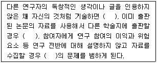
- 표절, 중복출판, 비밀보장
- 중복출판, 표절, 비밀보장
- 표절, 중복출판, 고지된 동의
- 표절, 비밀보장, 고지된 동의
- 중복출판, 표절, 고지된 동의
(정답률: 알수없음)
64. 조작적 정의에 관한 설명으로 옳지 않은 것은?
- 개념의 진술문이 참이 되기 위한 조건을 정의 속에 포함시켜 기술하는 방식을 말한다.
- 개념을 조작적으로 정의함으로써 추상적인 개념의 의미가 명확해 진다.
- 연구에서 새로운 구인(construct)을 탐구하는 경우 개념적 정의 없이 조작적 정의를 내려도 된다.
- 조작적으로 개념을 정의하는 방법은 브리지만(P. Bridgman)이 주창한 조작주의에서 비롯되었다.
- 개념을 조작적으로 정의함으로써 개념의 속성 관찰과 측정이 가능하게 된다.
(정답률: 알수없음)
65. 다음 중 비율척도에 해당하는 것을 모두 고른 것은?
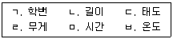
- ㄱ, ㄴ, ㄷ
- ㄱ, ㄷ, ㄹ
- ㄴ, ㄷ, ㄹ
- ㄴ, ㄹ, ㅁ
- ㄴ, ㄹ, ㅂ
(정답률: 알수없음)
66. 영가설에 관한 설명으로 옳은 것은?
- 영가설은 어떤 특정한 값과 다르다고 진술하는 가설이다.
- 영가설은 대립가설이라 부른다.
- 영가설을 직접 검정할 수는 없다.
- 비방향적 영가설을 μ1 ≠ μ2로 표기할 수 있다.
- 방향적 영가설을 μ1 ? μ2로 표기할 수 있다.
(정답률: 알수없음)
67. 과학의 특징에 해당하는 것을 모두 고른 것은?
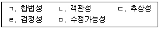
- ㄴ, ㄹ
- ㄹ, ㅁ
- ㄱ, ㄷ, ㄹ
- ㄴ, ㄹ, ㅁ
- ㄴ, ㄷ, ㄹ, ㅁ
(정답률: 알수없음)
68. 최소자승법을 적용하기 위한 가정으로 옳지 않은 것은?
- 모집단의 오차항의 기대치는 0이다.
- 모집단의 오차항의 분산은 동일하다.
- 오차항 사이에는 상관관계가 없다.
- 오차항과 독립변수 사이에 상관관계가 있다.
- 모집단의 회귀모형은 적합하게 설정되어 있다.
(정답률: 알수없음)
69. 내적 타당도를 저해하는 요인에 관한 설명으로 옳지 않은 것은?
- 연구기간에 발생하는 외부적 사건이 실험결과에 영향을 주는 것은 역사적 요인에 해당한다.
- 특정 개념을 측정하기 위해 하나의 척도를 사용할 때 발생하는 위협요인은 반복검사에 해당한다.
- 노인이 치료를 받아도 건강이 개선되지 않는 것은 성숙효과에 해당한다.
- 반복적 측정에 따라 내적 타당도가 위협받는 것은 시험효과(학습효과)에 해당한다.
- 측정도구, 측정기법 등의 차이에 의한 효과는 측정의 편향에 해당한다.
(정답률: 알수없음)
70. 다음 그림에 관한 설명으로 옳지 않은 것은?
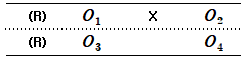
- 실험설계의 한 유형을 설명하는 것이다.
- 통제집단 준실험설계를 나타낸 것이다.
- 통제집단 사전사후측정설계를 나타낸 것이다.
- 대상의 무작위화, 독립변수의 조작을 포함한다.
- 한 집단에만 실험처치를 실시했다.
(정답률: 알수없음)
71. 솔로몬 4집단설계에 관한 설명으로 옳지 않은 것은?
- 두 집단에는 실험처치를 실시한다.
- 두 집단에는 사전검사를 실시하지 않는다.
- 통제집단 사전사후측정설계와 통제집단 사후측정설계를 통합한 형태이다.
- 다소 복잡한 것이 문제이지만 내적 타당도를 확보한다는 측면에서 이상적이다.
- 실험처치 기간이 단기일 때보다 장기일 때 더 적합하다.
(정답률: 알수없음)
72. 가외변인의 통제 방법으로 보기 어려운 것은?
- 통계적 회귀(statistical regression)
- 은폐(blind)
- 짝짓기(matching)
- 평형화(counterbalancing)
- 무선화(randomization)
(정답률: 알수없음)
73. Y 고등학교 3학년 학생들의 학년 석차와 영어 점수 순위간의 상관관계를 알아보기 위한 통계값은?
- 사분상관계수
- 양분상관계수
- 스피어만(C. Spearman)의 등위상관계수
- 양류상관계수
- 편상관계수
(정답률: 알수없음)
74. 다음은 연구방법과 그 특징을 연결한 것이다. ( )에 들어갈 내용이 순서대로 옳은 것은?
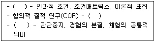
- 담화분석, 범주의 비율, 사회연결망분석
- 근거이론, 영역 및 교차분석, 현상학적 연구
- 근거이론, 이론적 표집, 사회연결망분석
- 문화기술지, 준거기반 표집, 사례연구
- 내러티브연구, 이론적 표집, 담화분석
(정답률: 알수없음)
75. 피어슨(K. Pearson)의 적률상관계수 rxy에 관한 설명으로 옳지 않은 것은?
- 상관계수의 값은 －1.0부터 ＋1.0사이의 어떤 값을 가진다.
- 상관계수가 1이라면 두 변인은 완전히 1대1로 변화함을 뜻한다.
- 상관계수가 0이라면 두 변인이 서로 독립되어 있다는 것을 뜻한다.
- rxy = －.75와 rxy = ＋.25 중 상관의 정도가 더 큰 것은 rxy = ＋.25이다.
- 변인 간 관계가 선형적으로 나타난다.
(정답률: 알수없음)